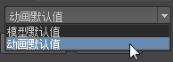

“游戏导出器”(Game Exporter)提供简化的 FBX 导出工作流，用于将模型和动画片段发送到游戏引擎。每个选项卡显示 FBX 选项的最小集，支持您导出资源而无需了解或更改过多设置。每个选项卡上显示的选项将保存为预设，当从其他场景中导出时可以重用。
此表简要概述了您将在“游戏导出器”(Game Exporter)中执行的简单任务。另请参见：
| 目标 | 操作 |
|---|---|
|
在导出选项之间切换。 |
打开第一个下拉菜单，然后选择“动画默认值”(Anim Default)预设、“模型默认值”(Model Default)预设或任何已添加的自定义预设。 
窗口中的其余选项将动态更新。 |
|
创建新建预设。 |
单击 。 |
| 将当前的预设设置保存到磁盘。 | 单击 。
注： 当您更改当前 FBX 导出的设置时，更改后的设置将自动在场景中保存。当您重新打开场景时这些设置会再次可用。可以使用此图标将设置保存为单独的文件，这样您可以在其他场景中加载相同的预设。
|
| 从磁盘加载保存的预设。 | 单击 ，然后导航以选择保存的预设文件。 |
| 编辑默认预设的设置。 | 单击 以打开“高级设置”(Advanced Settings)。 |
“游戏导出器”(Game Exporter)中显示的大多数选项都可以更改，具体取决于所选择的预设。默认情况下，“动画默认值”(Anim Default)预设设置用于动画片段的标准导出，“模型默认值”(Model Default)预设设置用于静态网格的标准导出。
有关使用其他或不同的 FBX 选项创建自己的预设的信息，请参见创建“游戏导出器”(Game Exporter)预设。
如果您的场景中包含具有想导出的对象的集，您可以选择“导出对象集”(Export Object Set)，然后从第二个下拉列表中选择您的场景中的特定集。
在此部分中，您可以在场景中定义多个动画片段，以便将它们导出为单独的文件，或导出为单个 FBX 文件中的单独镜头。您可以创建、命名、设置开始和结束帧，然后在此区域播放片段。请参见使用“游戏导出器”(Game Exporter)导出动画片段。
创建了片段列表后，可以使用右侧的复选框，选择要通过当前操作导出的片段。
将边的硬度/柔和度转化为导出几何体的平滑组。禁用时，只有明确的法线可以通过该文件导出。
“将多个片段保存为单个文件”(Save Multiple Clips to Single File)操作将片段以 FBX 镜头形式保存在单个 FBX 文件内。
（“模型”(Model)选项卡。） 设定是将多个网格导出到一个 FBX 文件，还是将每个网格或层次分别导出为多个 FBX 文件。
启用时，变换坐标将清零，即在导出的文件中将对象或层次移动到原点。
设定是否导出与您的选择关联的所有节点。
如果您正在使用“烘焙动画”(Bake Animation)，并且不希望整个绑定包含在导出的 FBX 文件中，可以关闭此选项。
默认情况下，“上方向轴”(Up Axis)设置为 Y，这与 Maya 中的设置一致。如果目标应用程序不支持 Y 向上世界轴且无法转换场景的 Y 向上世界轴，则可以使用 Z 向上轴导出场景。
启用“嵌入媒体”(Embed Media)将在 FBX 文件内包含（嵌入）关联的媒体（如纹理）。这有助于防止出现以下类似问题，例如，如果从关联媒体文件位置的相对和绝对路径上移动或删除任何纹理，纹理可能会消失。如果您将 FBX 文件给使用另一台计算机的某个用户，但在相同计算机驱动器上该目录下却不存在那种纹理，则可能会出现以上情况。
选择“二进制”(Binary)或“ASCII”。
选择用于导出的文件的 FBX 版本。若要确认您具有准确的插件版本，请单击“高级设置”(Advanced Settings)图标 ，验证“FBX 选项”(FBX Options)底部列出的内容。
在“高级设置”(Advanced Settings)窗口中，启用“编辑动画片段高级设置”(Edit Animation Clips Advanced Settings)或“编辑模型高级设置”(Edit Model Advanced Settings)，可开始进行更改。
如果您已经在计算机上安装了 FBX Review，可以使用此选项直接在 FBX Review 中启动导出的文件。另请参见使用 FBX Review 预览文件。
如果正在将动画导出为多个动画片段文件，则该名称将附加到每个片段文件名称的开头。如果“文件名”(Filename)为空，则不附加前缀。
投影文件名显示在其他“路径”(Path)设置下方，以显示导出文件的完整名称。